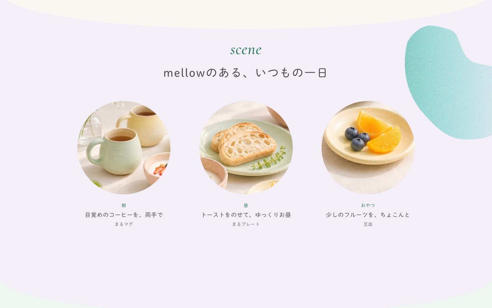
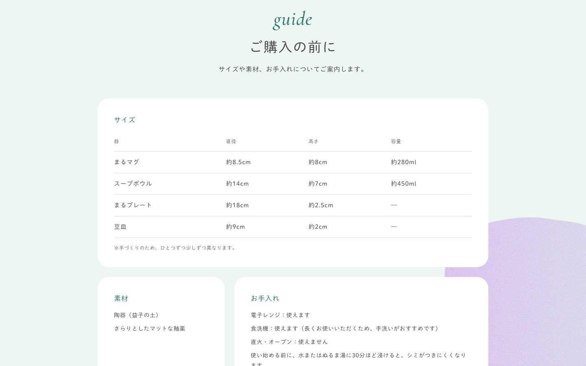

陶芸ブランド「mellow」ランディングページ



- 制作区分
- 自主制作（架空の陶芸作家ブランド）
- 制作概要
- 栃木・益子の陶芸作家の器を紹介し、オンラインショップへ案内する1ページのサイト。作家さんや小さなブランド向けの制作サンプルとして作りました。
- 制作目的
- 作品の魅力を伝え、オンラインショップでの購入につなげること。
- ターゲット
- 丁寧な暮らしに憧れているものの、毎日は忙しい30〜40代の女性。主にInstagramから訪れ、スマホで見ることを想定しました。
- 担当範囲
- 要件定義、デザイン、コーディング、公開
- デザインの意図
「今日をまるく、やわらかく。」というコピーに合わせ、ぽってりした器を思わせる丸い形と、ミントやラベンダーの淡い色でやわらかさを表現しました。
「コンセプト → 使う場面 → 器 → 作家 → こだわり → ご購入の前に → ショップ」という流れで、気になったときに迷わず進めるよう、最初の画面と器の紹介の直後にもショップへのボタンを置いています。お知らせはInstagramへご案内する形です。
- コーディング
- PC・スマホ対応（レスポンシブ）。スクロールに合わせて背景の形がふわっと動くアニメーションと、スマホの追従ボタンを実装しました。サンプルのため、ショップ、Instagram、お問い合わせのボタンは表示のみです。
- 使用ツール
- HTML / CSS / JavaScript（画像にはAI生成のものを含みます）